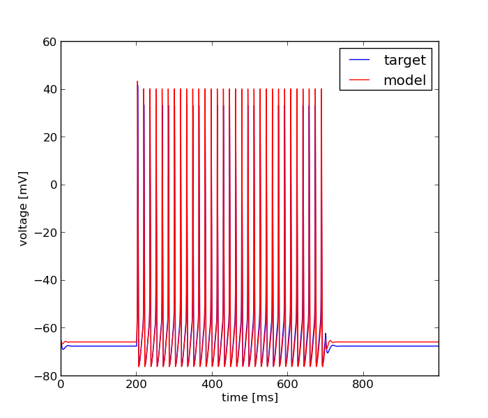

Mon Sep 30 12:38:21 2013
Optimization of hh_pas.hoc based on: /home/fripe/workspace/git/optimizer/tests/hh_pas_surrogate/input_data.dat
Results
| Parameter Name | Minimum | Maximum | Optimum |
|---|---|---|---|
| soma hh gkbar_hh | 0.001 | 1.0 | 0.026986798782 |
| soma hh gnabar_hh | 0.001 | 1.0 | 0.732067930972 |
| soma pas g_pas | 1e-06 | 0.01 | 0.00153506396189 |
Fitnes: 0.00428426250986

Error Tolerance for x: = None
Size of Population: = 20.0
Accuracy: = None
Mutation Rate: = 0.25
Cooling Rate: = None
Final Temperature: = None
Std. Deviation of Gaussian: = None
Cooling Schedule: = None
boundaries = [[0.001, 0.001, 1e-06], [1.0, 1.0, 0.01]]
Number of Generations: = 50.0
evo_strat = Classical EO
seed = 1234.0
Initial Temperature: = None
starting_points = None
Dwell: = None
Mean of Gaussian: = None
Error Tolerance for f: = None
num_inputs = 3
feats = Average Squared Error, Spike Count
weights = [0.5, 0.5]
user function =